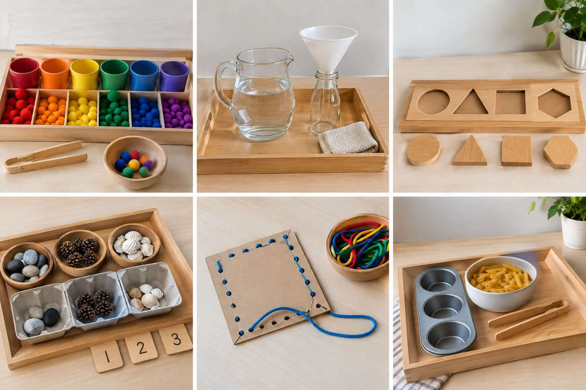
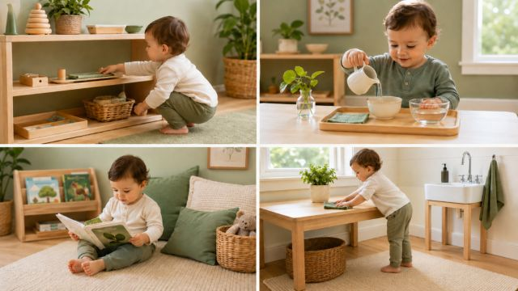
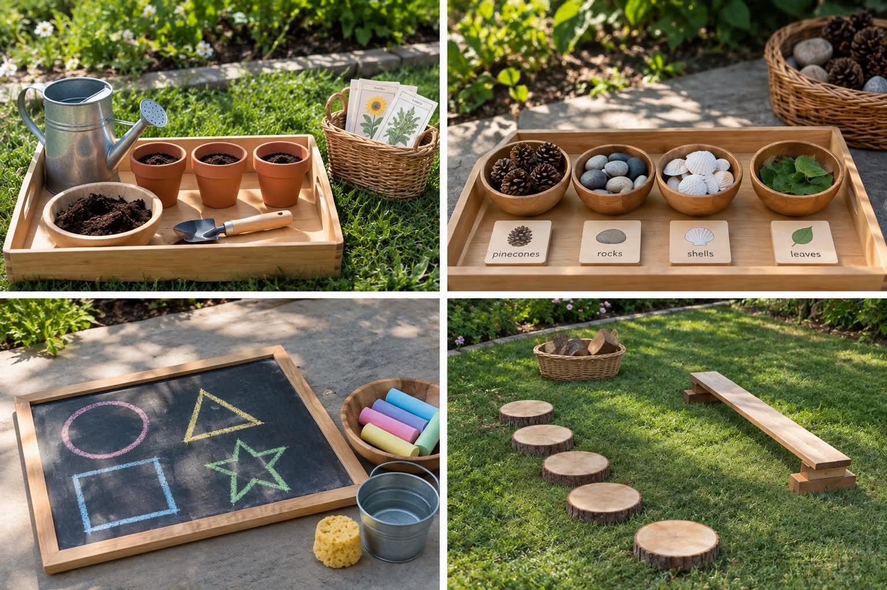

Indoor
Fill a cup with water
Organizing balls by color
Matching shapes
Help with food preparation
Help with house hold chores
Count objects
Throw object inside a bin

1. Respect towards the child
2. Prepared enviroment
3. Absorbent Mind
4. Sensitive time periods
5. Independence and Discovery

Fill a cup with water
Organizing balls by color
Matching shapes
Help with food preparation
Help with house hold chores
Count objects
Throw object inside a bin

Gardening
Touch outside objects like rocks/sand/grass
Observe outside nature
Create art using natural materials
Identify different types of plants
Draw with chalk
Balance on tree trunks